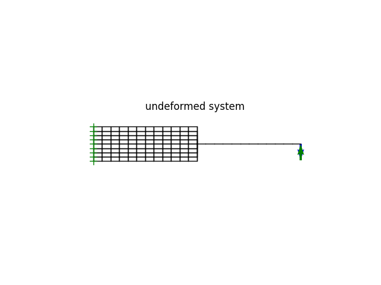
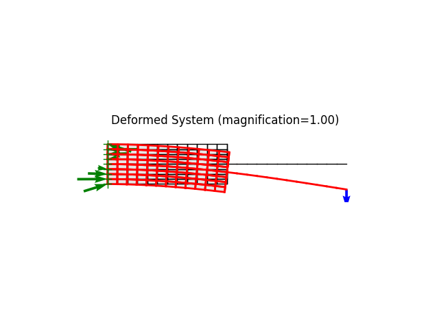
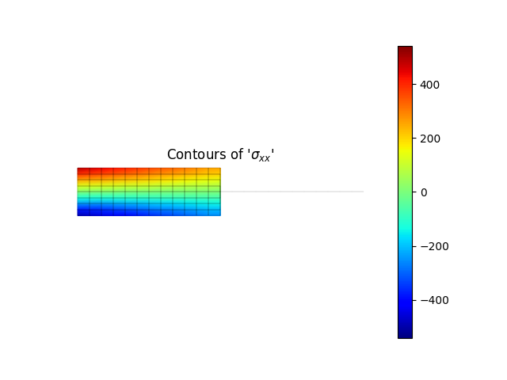
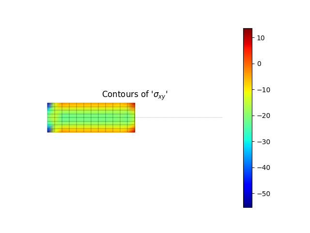
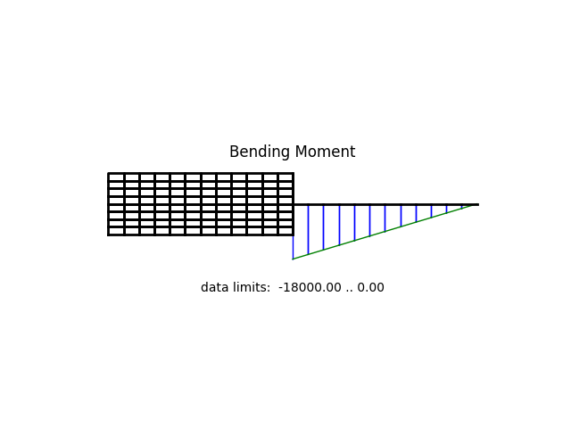
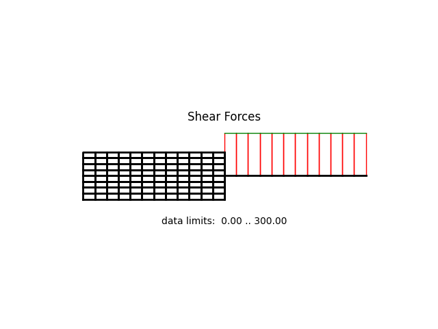

Note
Go to the end to download the full example code.
Bending a cantilever beam using a mixed mesh of Quad and Frame2D elements
Using PatchMesher to model the 2d model portion
Using Frame2D to model the beam/frame model portion
Using BeamSolidLink to connect the two model types
Background Theory
This problem can be approximately validated using Bernoulli-Euler theory for small deformations. The given problem shall be modeled using
parameter |
value |
description |
|---|---|---|
\(E\) |
modulus of elasticity (in ksi) |
|
\(I\) |
666.667 |
area moment of inertia (in \(inches^4\)) |
\(L\) |
length of the cantilever (in inches) |
|
\(P\) |
force at \(x=L\) (in kips) |
The general solution then yields
For small displacement theory, the horizontal movement at the centerline is zero.
variable |
value |
description |
|---|---|---|
\(u(L)\) |
0.000 |
end displacement (in inches). \(u>0\) means moving to the right. |
\(v(L)\) |
-1.296 |
end displacement (in inches). \(v>0\) means moving up. |
\(\theta(L)\) |
\(-16.20 * 10^{-3}\) |
end displacement (in radians). \(\theta >0\) means counter-clockwise rotation. |
variable |
value |
description |
|---|---|---|
\(u(L)\) |
0.000 |
end displacement (in inches). \(u>0\) means moving to the right. |
\(v(L)\) |
-12.96 |
end displacement (in inches). \(v>0\) means moving up. |
\(\theta(L)\) |
\(-162.0 * 10^{-3}\) |
end displacement (in radians). \(\theta >0\) means counter-clockwise rotation. |
import numpy as np
from femedu.examples import Example
from femedu.domain import System, Node
from femedu.solver import NewtonRaphsonSolver
from femedu.elements.linear import Quad, Frame2D, BeamSolidLink
from femedu.materials import PlaneStress, ElasticSection
from femedu.mesher import PatchMesher, CurveMesher
class ExampleMixed10(Example):
def problem(self):
# ========== setting mesh parameters ==============
Nx = 12 # number of elements in the mesh
Ny = 8 # number of elements in the mesh
Lx = 120.0 # length of plate in the x-direction
Ly = 20.0 # length of plate in the y-direction
# ========== setting material parameters ==============
params2d = dict(
E = 20000., # Young's modulus
nu= 0.250, # Poisson's ratio
t = 1.00 # thickness of the plate
)
beamParams = dict(
E = 20000., # Young's modulus
A = Ly, # cross section area
I = Ly**3/12. # cross section moment of inertia
)
# ========== setting load parameters ==============
px = 0.0 # uniform load normal to x=Lx
py = 0.0 # uniform load normal to y=Ly
pxy = 1.5 # uniform shear load on x=L
# ========== setting analysis parameters ==============
target_load_level = 10.00 # reference load
max_steps = 2 # number of load steps: 2 -> [0.0, 1.0]
# define a list of target load levels
load_levels = np.linspace(0, target_load_level, max_steps + 1)
#
# ==== Build the system model ====
#
model = System()
model.setSolver(NewtonRaphsonSolver())
# create the 2d portion
mesher = PatchMesher(model, (0.,-Ly/2), (Lx/2,-Ly/2), (Lx/2, Ly/2), (0., Ly/2))
nodes, quads = mesher.quadMesh(Nx, Ny, Quad, PlaneStress(params2d))
# create a list of nodes on the interface
# .. we do this before we create the frame elements
# .. to avoid checking for the one frame node along that line
section = model.findNodesAlongLine((Lx/2, 0.0), (0.0, 1.0))
# create the beam portion
frameMesher = CurveMesher(model, (Lx/2, 0.0), (Lx, 0.0))
frameNodes, beams = frameMesher.lineMesh(Nx, Frame2D, ElasticSection(beamParams))
# find the lead node
for lead_node in frameNodes:
if lead_node.isClose((Lx/2,0.0)):
break
# create the links
for plate_node, _ in section:
model.addElement(BeamSolidLink(lead_node, plate_node))
# define support(s)
## find nodes at x==0
for node, _ in model.findNodesAlongLine((0.0, 0.0), (0.0, 1.0)):
node.fixDOF('ux', 'uy')
# find the node on the beam axis (y==0.0) at the end of the beam (x==Lx)
end_node, _ = model.findNodesAt((Lx, 0.0))[0]
# ==== complete the reference load ====
# the section at the right end (Frame model)
# .. this must be the integral over the end section, i.e., traction multiplied by the height.
end_node.setLoad([px * Ly, -pxy * Ly], ['ux', 'uy'])
# surface loading on the top face
# .. 2d portion
for _, face in model.findFacesAlongLine((0.0, Ly), (1.0, 0.0), orientation=-1):
face.setLoad(-py, 0.0)
# .. frame portion
for elem in beams:
elem.setDistLoad(-py)
model.plot(factor=0, title="undeformed system", show_bc=1, show_loads=1)
for lf in load_levels:
model.setLoadFactor(lf)
model.solve(verbose=True)
#model.report()
model.plot(factor=1., show_bc=1, show_loads=1, show_reactions=1)
model.valuePlot('sxx', show_mesh=True)
model.valuePlot('sxy', show_mesh=True)
model.beamValuePlot('M')
model.beamValuePlot('V')
msg = r"""
The applied load at a load factor of 10.0 is:
* horizontal force at the right end node: {:8.3f} kips
* vertical force at the right end node: {:8.3f} kips
* distributed vertical load along the upper boundary: {:8.5f} k/in
The end deflection of the cantilever at this load is:
* horizontal displacement: {:8.3f} in
* vertical displacement: {:8.3f} in
* rotation (CCW): {:8.1f} * 10^-3 rad
""".format(
lf*px*Ly,
lf*pxy*Ly,
py,
*end_node.getDisp(['ux','uy']),
1.0e3*end_node.getDisp(['rz'])[0]
)
print(msg)
Run the example by creating an instance of the problem and executing it by calling Example.run()
if __name__ == "__main__":
ex = ExampleMixed10()
ex.run()
- 
- 
- 
- 
- 
- 
norm of the out-of-balance force: 4.9315e-10
+
norm of the out-of-balance force: 1.5000e+02
norm of the out-of-balance force: 7.3680e-09
+
norm of the out-of-balance force: 1.5000e+02
norm of the out-of-balance force: 1.4148e-08
+
/Users/pmackenz/Development/Educational/FEM.edu/src/femedu/elements/Element.py:350: UserWarning: ** WARNING ** Frame2D.mapGaussPoints not implemented
warnings.warn(msg)
/Users/pmackenz/Development/Educational/FEM.edu/src/femedu/elements/Element.py:350: UserWarning: ** WARNING ** BeamSolidLink.mapGaussPoints not implemented
warnings.warn(msg)
/Users/pmackenz/Development/Educational/FEM.edu/src/femedu/elements/Element.py:333: UserWarning: ** WARNING ** Quad.getInternalForce not implemented
warnings.warn(msg)
The applied load at a load factor of 10.0 is:
* horizontal force at the right end node: 0.000 kips
* vertical force at the right end node: 300.000 kips
* distributed vertical load along the upper boundary: 0.00000 k/in
The end deflection of the cantilever at this load is:
* horizontal displacement: -0.000 in
* vertical displacement: -12.749 in
* rotation (CCW): -158.4 * 10^-3 rad
Total running time of the script: (0 minutes 0.668 seconds)